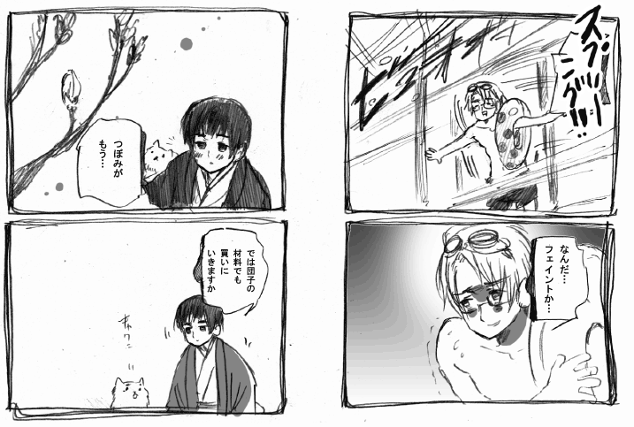

|
■アメリカ人が春大好きなわけ■
同時進行でお読みください。

日本は四季楽しみすぎだろう。
【フェイントかけてくる気候】
アメリカの気候は部屋の中で見てるのと
実際外に出てみるとのでは大分ちがかったりします。
家の中からだとどう見ても朗らかな春の日に見えて
風が殺人レベルに寒い日など春に集中しています。
ひどく寒いか、ひどく暑いか、ひどく乾燥してるか、温暖な地＋タイフーンか
アメリカの気候はスケールがでかくてアバウトです。
【２４時間のコンビニのありがたさ】
アメリカには個人でやってるようなデリはあるのですが
２４時間やってるコンビニみたいなものがなかなかありません。
田舎に行くとそれも7時でしまったりするので
雪の夜に車もなく電球や食糧が切れた日には
ただひたすら耐えるか、根性でシティに出るかの二択。
とってもワイルド。
【アメリカの暖房】
一つのビルディングをボイラーいっちょで温めてたりするので
温度調節はできないわ、熱すぎる日と寒すぎる日があるわで
アメリカの暖房は切ないです。
【SIREN]
明るい部屋でワイワイやってると屍人が可愛く見えるが
暗い部屋で一人でやると怖くてトイレに行くのも
小さな物音にもビビるようになってしまう。
【気がつくと二本あるゲームソフト】
何故かやってしまう。
ちなみに時事系列はこれ→アメリカのホラー映画話です。
一回やってクリアーできなくて放置したSIRENを
後でもう一回やったらおもしろいし屍人可愛いじゃんってなりました。

|